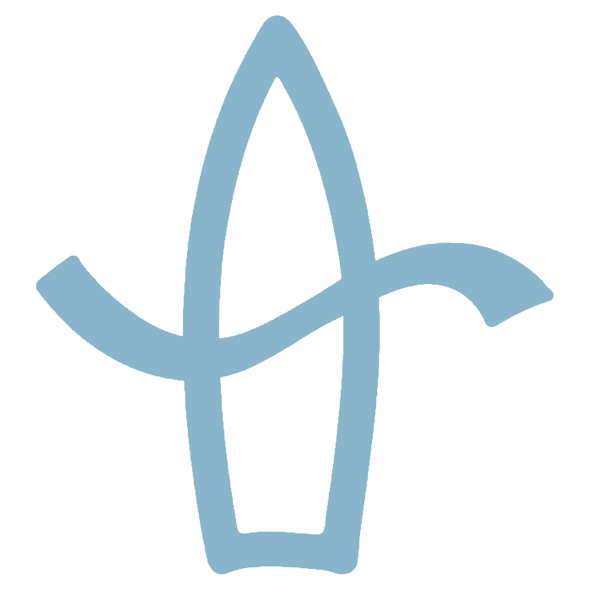

Sing it back.
Tap to play a note. Listen as often as you like. When you’re ready, tap Record mine and sing it back. Nothing starts automatically.
Your five-note check
Five pitches, at your own pace. No countdowns, scales, or music theory.
The reference is longer and uses warmer harmonics so it’s clearer on phone speakers. Turn it down with headphones if needed.
You control when the note plays and when recording starts
Your pitch
snapshot.
A starting point, not a grade. You controlled the timing for every note. Repeat them to build recall, or come back another day.
Only numbers are saved on this browser, never microphone audio.
Private by design. The mic is analyzed on this device. No uploads, accounts, analytics, or audio recordings. Only numeric summaries are saved locally, and you can clear them.